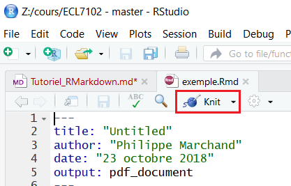

Sampling and parameter estimation
September 16, 2020
In this lab, you will apply the concepts from the two last classes, in addition to learning how to create analysis reports with R Markdown.
Introduction to R Markdown
Create a R Markdown document
The R Markdown format allows you to combine text, chunks of R code, and results in one document. This tutorial is a very brief introduction to R Markdown. A more complete tutorial can be found at https://rmarkdown.rstudio.com/lesson-1.html.
In RStudio, create a new R Markdown document with the menu commands File -> New File -> R Markdown…. Choose the Word (.docx) output format.
The advantage of the Word format is that it is possible to edit the resulting document in Word. This is the recommended format for handing in assignments in this course. The PDF format is also useful for producing documents, while the HTML format allows you to publish the results on the web. Note that all materials in this course are produced using R Markdown!
The file created already contains sample R Markdown text. Save the file (give it the name example.Rmd) and press the Knit button to produce the .docx file.

When reading the description of the different parts of the document, compare the .Rmd file and the result in Word.
Components of a R Markdown document
Header
The header of the file contains information such as title, date, and output format. It begins and ends with a block of three dashes ---.
R code chunks
The R code chunks have a gray background when displayed in RStudio. They start and end with three backticks ```.
The shortcut Ctrl + Alt + I automatically inserts a new code chunk into the document.
The first code chunk (which contains knitr::opts_chunk$set(echo = TRUE)) is used to specify certain parameters. You can ignore it for now.
Look at the second chunk that contains summary(cars). To the right of the three backticks on the first line, you find the chunk header surrounded by braces: {r cars}. It starts with r to indicate that it is code R, whilecars is the name of the chunk. (It is optional to name the chunks.) The green arrow on the far right is used to execute the code and display the result.
Now look at the Word file. There you will find the code chunk followed by the result.
The second code chunk plot(pressure) produces the graph that you see in the Word document. The chunk header contains the option echo = FALSE which means that the code is invisible, only the result appears in Word.
Markdown text
The rest of the document is composed of text with some Markdown language markers for the layout.
Here are some examples of layout markers and their output.
# Level 1 Header
Level 1 Header
## Level 2 Header
Level 2 Header
### Level 3 Header
Level 3 Header
Text in *italic*
Text in italic
Text in **bold**
Text in bold
- List Item
- List Item
- List item
- List item
You can now replace the code and text in the example with your answers to the following exercises.
Exercises
1. Characteristics of three species of penguins
For this exercise, we will use a dataset containing measurements taken on 344 penguins from three species (Adelie, Chinstrap and Gentoo) present on the Palmer Archipelago of Antarctica.
To load a dataset from a R package, you must first load the package, then read the dataset with the data function. Here, we will load the penguins dataset from the palmerpenguins package.
library(palmerpenguins)
data(penguins)
head(penguins)## # A tibble: 6 x 8
## species island bill_length_mm bill_depth_mm flipper_length_~ body_mass_g sex
## <fct> <fct> <dbl> <dbl> <int> <int> <fct>
## 1 Adelie Torge~ 39.1 18.7 181 3750 male
## 2 Adelie Torge~ 39.5 17.4 186 3800 fema~
## 3 Adelie Torge~ 40.3 18 195 3250 fema~
## 4 Adelie Torge~ NA NA NA NA <NA>
## 5 Adelie Torge~ 36.7 19.3 193 3450 fema~
## 6 Adelie Torge~ 39.3 20.6 190 3650 male
## # ... with 1 more variable: year <int>- Let’s first visualize part of the data. With ggplot2, produce a scatterplot of the flipper length vs. the bill length of the penguins, using colors to differentiate the species.
How would you calculate the mean of flipper_length_mm and its 95% confidence interval by species?
What quantities do you need for this calculation?
Using the dplyr package, calculate the mean, sample size, standard deviation and standard error of the mean of
flipper_length_mmfor each species. Save the result in a data framefl_stat.
Hints
- Only keep rows where
flipper_length_mmis not missing, using the condition!is.na(flipper_length_mm). - In
summarize, you can use then()function to count the number of rows per group, e.g.:summarize(n = n(), ...). This is preferrable to using thecountfunction when you want to calculate both the number of observations as well as other summary statistics.
During the class on statistical distributions, we saw the functions
rnorm,dnorm,pnormandqnormwhich calculate values from the normal distribution. Similar functions exist for the \(t\) distribution (rt,dt,pt,qt). Let’s use the functionqt(p, df)to determine the interval corresponding to 95% of the probability. What values of \(p\) (cumulative probability) should we use? How many degrees of freedom (\(df\)) based on sample size \(n\)?Create two new columns in
fl_statcontaining the minimumic_minand the maximumic_maxof the confidence interval. Define these columns as functions of the mean, standard error and sample size.Finally, use the
geom_pointrangegraph type of ggplot2 to visualize the confidence interval for each species. This type of graph requires the specification ofy(central point),ymin(minimum of range) andymax(maximum of range) in theaesfunction.
2. Mean DBH of species sampled at Kejimkujik National Park
Based on the code written in the last exercise, produce a graph of the mean DBH with the 95% confidence interval for all species in the data frame from the file cours1_kejimkujik.csv.
Then, from the data and graph, answer the following questions.
What is the confidence interval of the mean DBH for white pine (PIST)? Assuming that the sampled individuals are representative of the population on this site, how do you interpret this interval?
If the sample is representative of each species, can it be easily determined which species has the smallest mean DBH, or which has the highest mean DBH, in this population?
3. Stratified sampling simulation
For this exercise, we will compare simple and stratified sampling using simulated samples from the penguins dataset. Here is the distribution of flipper lengths for each species in the original data frame. Note that we have created a new fl table that contains only those individuals where flipper length was measured.
fl <- filter(penguins, !is.na(flipper_length_mm))
ggplot(fl, aes(x = species, y = flipper_length_mm)) +
geom_boxplot()
In dplyr, the sample_n(df, n) function returns a data frame containing n randomly selected observations from the data frame df. It can also be used with group_by to choose n observations by group.
- Create two functions
fl_aleaandfl_strat. The first function chooses 30 random observations offl, then returns the mean offlipper_length_mmfor these observations. The second chooses 10 random observations from each of the three species, then returns the mean offlipper_length_mm(overall mean, not by species). Make sure that each of the two functions returns a vector of length 1.
Note: You can write these functions without arguments (empty parentheses after function), as in the example below.
fl_alea <- function() {
# Insert function code here
}- Generate a vector of 1000 results of each function with
replicate, as follows:
rep_alea <- replicate(1000, fl_alea())
rep_strat <- replicate(1000, fl_strat())- Calculate the standard error of each mean (from the standard deviation of
rep_aleaandrep_strat). Before running the calculation, can you predict which method will be more precise and why?